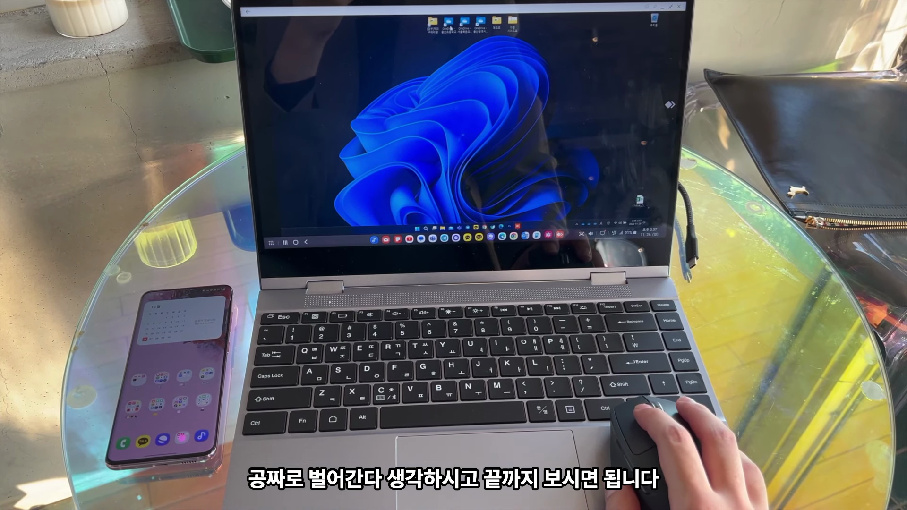
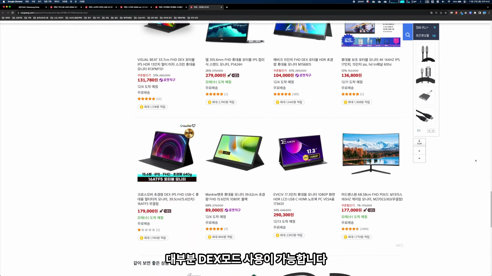
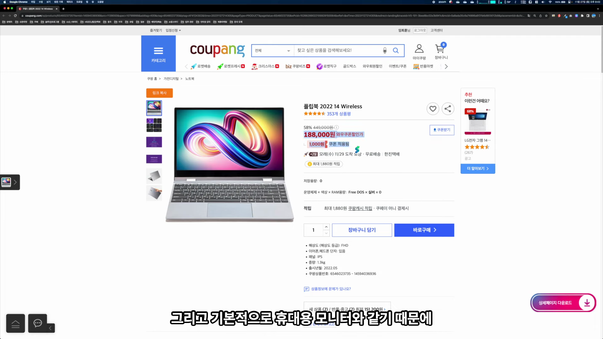
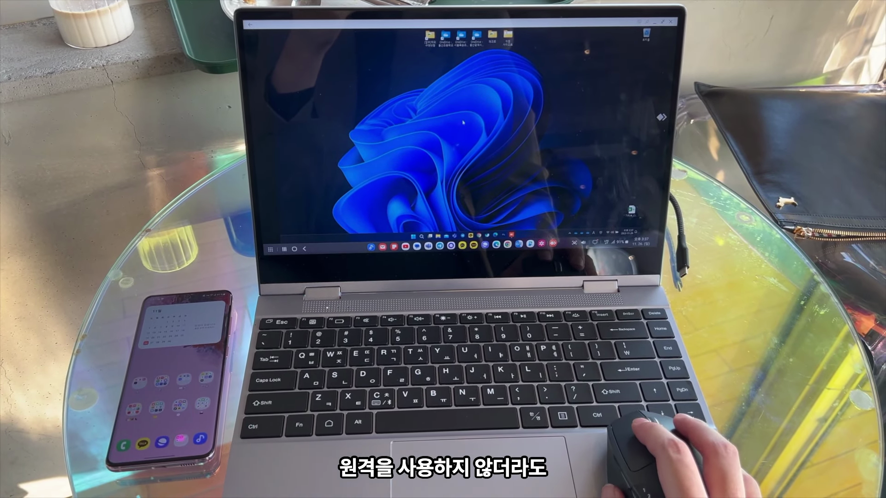
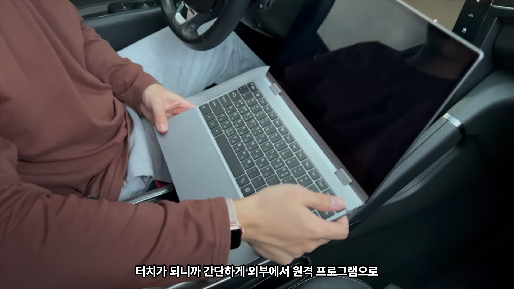

이 블로그 포스트에서는 갤럭시 스마트폰의 덱스 모드를 활용하는 방법과 이점에 대해 알아보겠습니다. 누가 사용해야 하며, 어떤 케이블과 모니터가 필요한지도 설명할게요. 전문적인 팁과 유용한 제품 정보가 가득합니다! 
덱스 모드 소개
- 스마트폰을 컴퓨터처럼 활용하는 기능
- 80% 이상의 사용자는 기능을 잘 모른다
- 갤럭시 플래그십 모델에서 지원
갤럭시의 덱스 모드는 스마트폰을 컴퓨터 본체처럼 활용할 수 있는 기능으로, 많은 사용자가 이 기능을 모르고 있다는 사실을 알리며, 기본적인 조작법에 대해 설명한다.
기본적인 연결 방법
- HDMI와 USB-C 케이블 연결
- 허브 또는 C타입 모니터 사용 가능
- USB 3.0 이상의 케이블 필요
현대의 모니터들은 다양한 연결 옵션을 제공하며, HDMI 및 USB-C 케이블을 통해 쉽게 접속할 수 있다. 포트 타입에 따라 적절한 케이블을 선택하는 것이 중요하다.

모니터 및 입력 장치 소개
- 휴대형 모니터 추천
- 키보드와 마우스 필요성 강조
- 플립북과 같은 제품을 활용할 수 있다
덱스 모드를 사용하기 위해서는 키보드와 마우스가 필수적이며, 다양한 휴대형 모니터를 활용해 작업 환경을 구성할 수 있다는 점을 강조한다.

제품 추천 및 구매 방법
- 44만 9천 원에서 할인 중
- 위치에 따라 다양한 모델 구매 가능
- 링크를 통해 쉽게 구매 가능
플립북 제품과 같은 추천 아이템을 통해 휴대성 높은 작업 환경을 만드는 방법과 더불어, 현재 할인 가격 정보를 알려준다.

덱스 모드 활용법
- 원격으로 컴퓨터 사용 가능
- 웹 기반 작업에 유용한 기능
- 스마트폰 앱 사용 가능
갤럭시 덱스 모드를 사용하면 원격으로 PC를 쉽게 사용하는 것이可能하고, 웹 기반 작업도 손쉽게 할 수 있다. 이를 통해 작업 효율성을 높일 수 있다.

사용 중 유용한 팁
- 360도 회전과 터치 지원
- 휴대성을 강조
- 다양한 환경에서 사용 가능
360도 회전되는 화면과 터치 기능을 활용하여 더 많은 활용성을 제공하며, 차량에서도 간편하게 사용 가능할 수 있다는 점을 지적한다.
Tags: #갤럭시 #덱스 모드 #스마트폰 #모바일 업무 #노트북 대체 #원격 활용 #휴대형 모니터 #작업 효율성